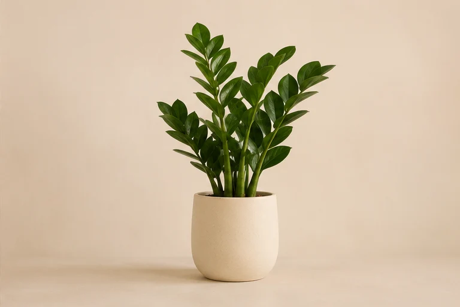
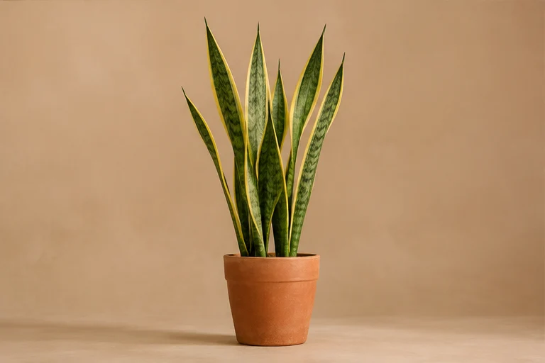
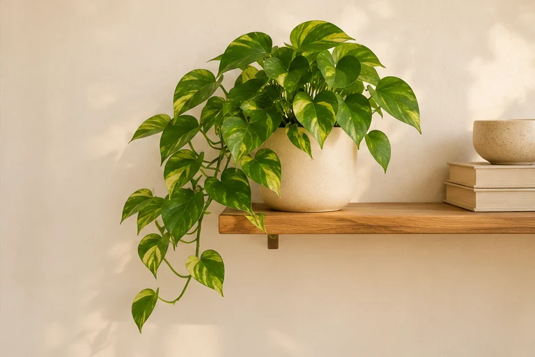

Zamioculca
Uma opção para ambientes com pouca luz natural. Espere o substrato secar antes de regar.
Plantas para apartamento
Da estante da sala ao cantinho da janela, encontre uma planta que combine com o seu espaço e a sua rotina.
Conhecer as plantas

Uma opção para ambientes com pouca luz natural. Espere o substrato secar antes de regar.

Folhas verticais que ocupam pouco espaço. Vai bem em vasos com boa drenagem.

Seus ramos pendentes ficam lindos numa prateleira perto de uma janela com luz indireta.
Escolha um vaso com furos e confira a umidade do substrato com o dedo. Se ainda estiver úmido, espere mais um pouco antes de regar.